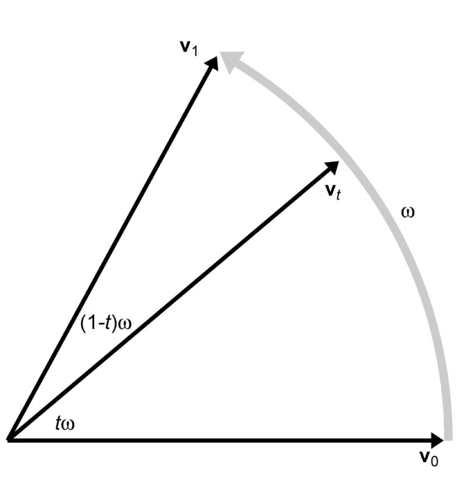
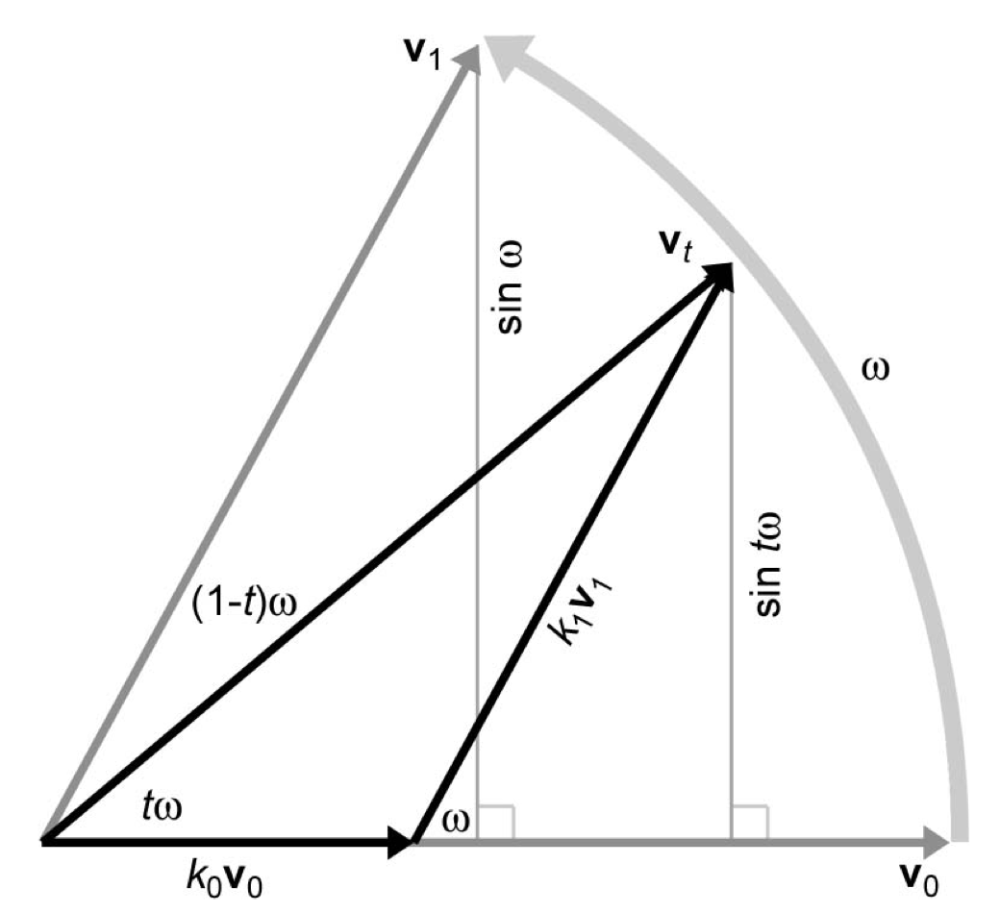

Quaternion
Interpolation (Slerp)
slerp: Spherical Linear intERPolation
Smoothly interpolate between two quaternions.
Slerp takes 3 parameters: $q_0$ and $q_1$ which are the starting and
ending quaternions and $t$, which is the interpolation parameter ($0$ to $1$).
Standard linear interpolation:
$\Delta a = a_1 - a_0$
$lerp(a_0, a_1, t) = a_0 + t\Delta a$
Starts at $a_0$ and add $t^{th}$ differ between $a_1$ and $a_0$
- Compute difference
- Take a fraction of the difference
- Take original value and adjust by fraction of the diffence
Compute the difference
Angular displacement:
$\Delta q = q_0^{-1}q_1$
Take a fraction of the difference
Quaternion exponentiation:
$\Delta q^t$
Take original value and adjust by fraction of the diffence
Use quaternion multiplication to adjust the initial value:
$q_0 \Delta q^t$
Slerp (theoretical formula):
$slerp(q_0,q_1,t) = q_0(q_0^{-1}q_1)^t$
In practice, its much simpler.
All quaternions exist on the same 4D "sphere" (because they're all unit
quaternions). We can connect two quats by connecting the arc of the sphere.
Plane example with rotation
Two 2D Vectors: $v_0$ and $v_1$ (unit length). $t$ fraction, with
$\omega$ angle between $v_0$ and $v_1$

Plane example with rotation
$v_t = k_0v_0 + k_1v_1$

Plane example with rotation
Solving for $k_1$ and $k_0$ with trig:
$sin\ \omega = \frac{sin\ t\omega}{k_1}$
$k_1 = \frac{sin\ t\omega}{sin\ \omega}$
$k_0 = \frac{sin(1 - t)\omega}{sin\ \omega}$
$v_t = k_0v_0 + k_1v_1$
$v_t = \frac{sin(1 - t)\omega}{sin\ \omega}v_0 + \frac{sin\ t\omega}{sin\ \omega}v_1$
With slerp:
$slerp(q_0,q_1,t) =
\frac{sin(1 - t)\omega}{sin\ \omega}q_0 +
\frac{sin\ t\omega}{sin\ \omega}q_1$
Use dot product to compute the 'angle' between the quats.
Because $q$ and $-q$ aren't the same orientation, we need to choose $q_0$ and
$q_1$ so the dot product between them is nonnegative.
Also, if $q_0$ and $q_1$ are too close, $sin\ \theta$ will be very small which
will be an issue in division. In this case, we'll use linear interpolation.